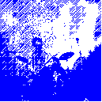
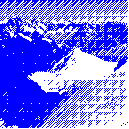
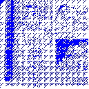
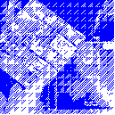
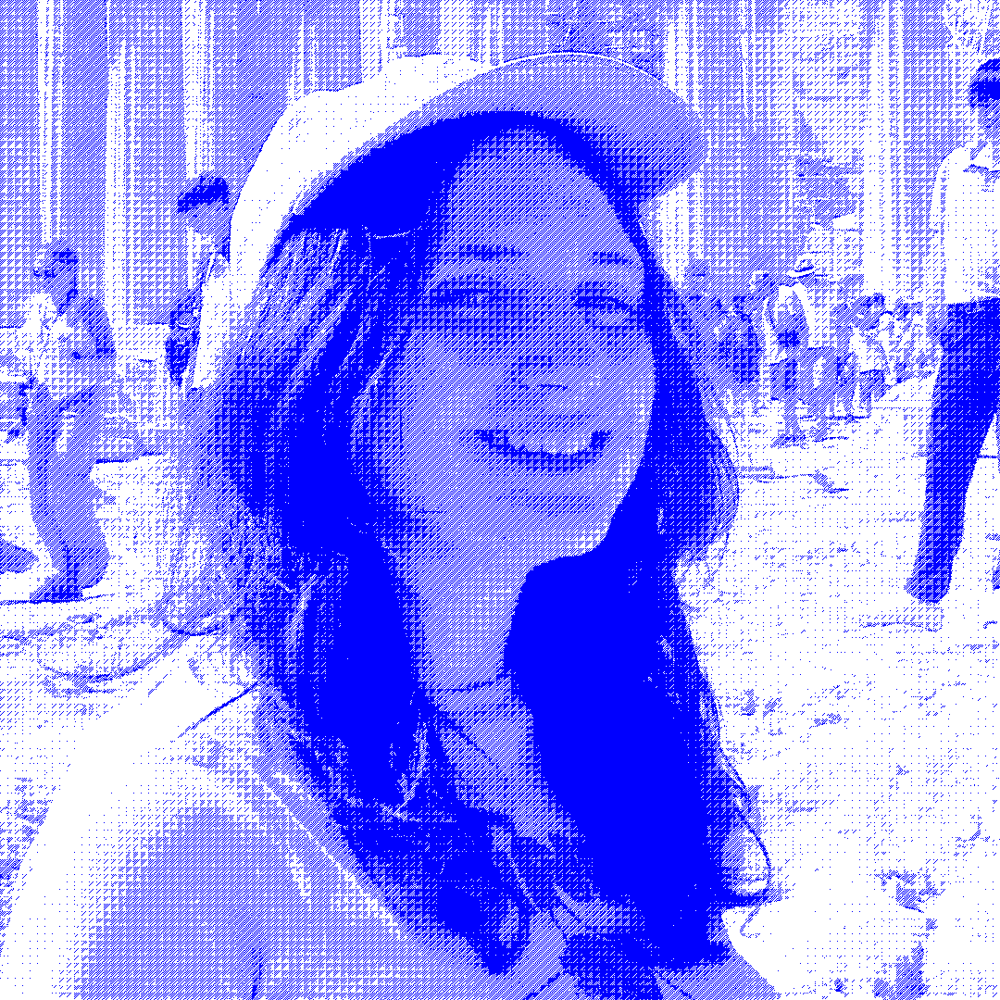

About me
Year: 2026
¡Hello! Soy Lucía de la Calle, motion designer junior enfocada en animación 2d, ritmo y movimiento.
Tras graduarme en Diseño Digital, he trabajado realizando contenido digital para redes, emisión para televisión y contenido educativo.
Actualmente busco seguir creciendo dentro de equipos creativos, y participar en proyectos audiovisuales y de motion graphics.